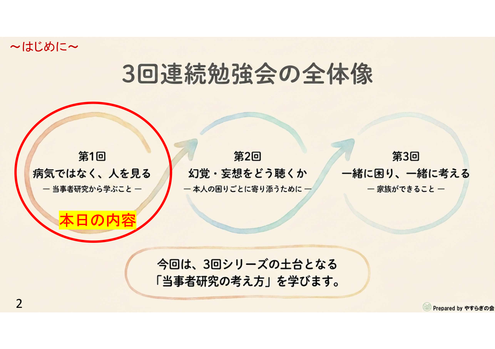
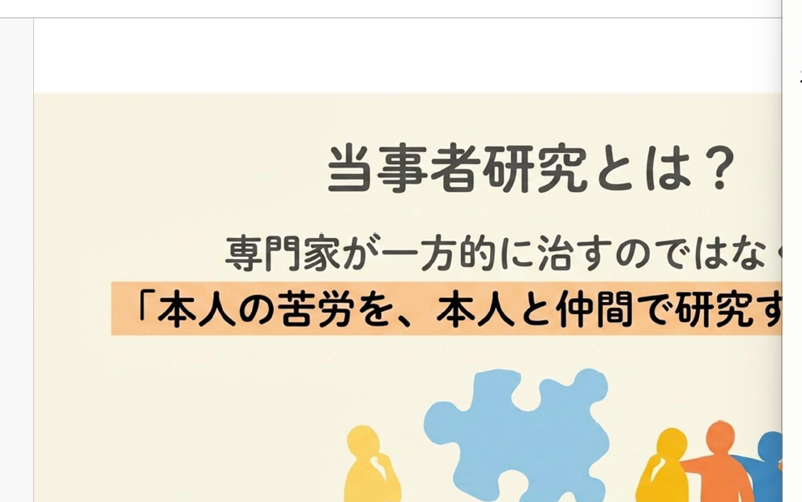
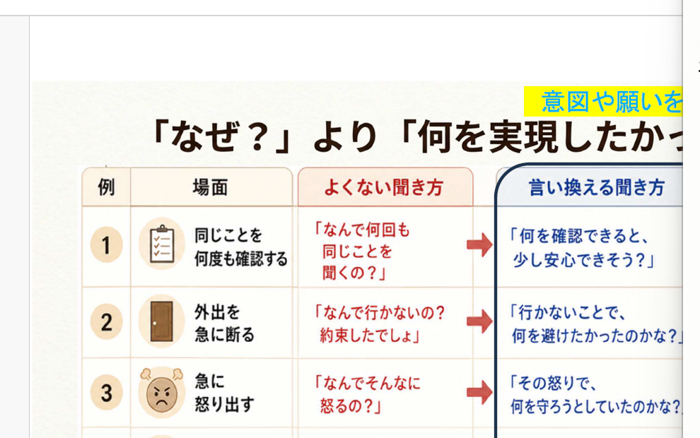
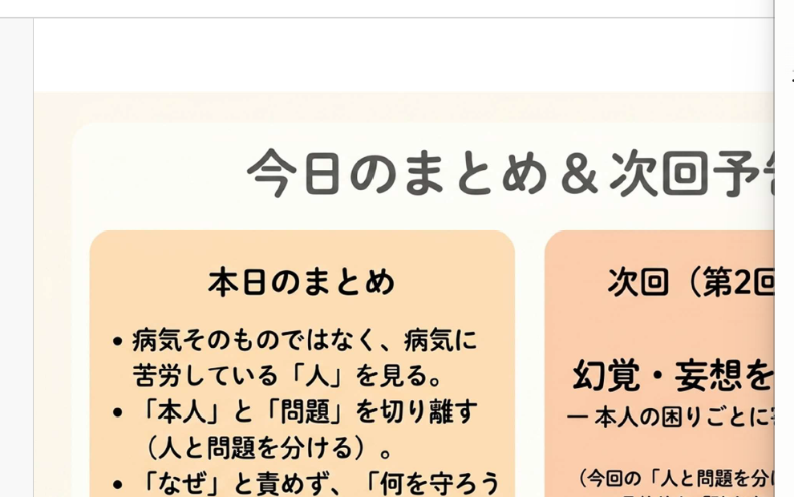
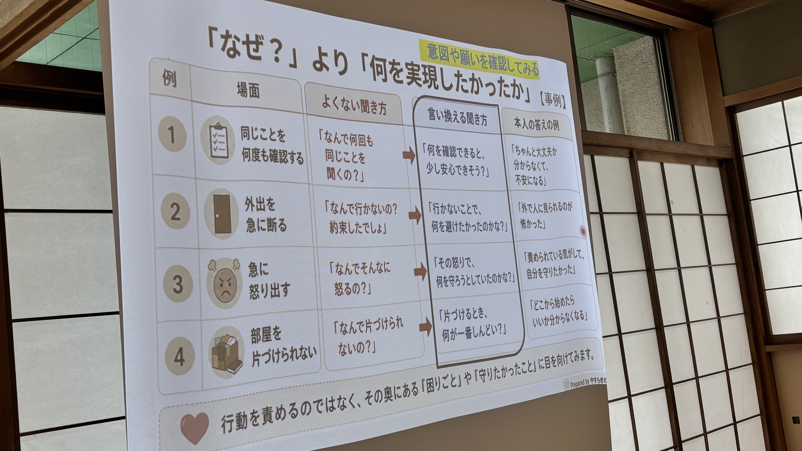
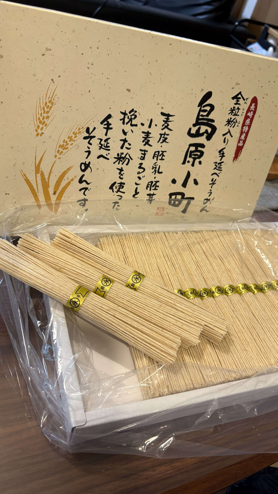

会の紹介
やすらぎの会についてご紹介します
「やすらぎの会」は、精神障害のある方の家族が集まる家族会です。
毎月の定例会や学習会・交流会を通じて、お互いの経験を分かち合い、地域での支え合いを大切にしています。
「一人で悩まないでほしい」——その思いが、この会の出発点です。
📋 基本情報
| 会の名称 | 新座市精神障害者家族会 やすらぎの会 |
|---|
| 活動地域 | 新座市およびその周辺 |
|---|
| 定例会 |
偶数月：第2日曜日 13:00〜15:00
奇数月：第2金曜日 13:00〜15:00
※原則上記で開催します。詳細は年間予定ページにてご確認ください。
|
|---|
| 活動場所 | 〒352-0032 新座市堀ノ内3-4-11（社会福祉法人にいざ内） |
|---|
| 連絡先 | メール：yasuragi.niiza@gmail.com 電話：080-6067-0600（担当：上原） |
|---|
🌿 会の目的・理念
- 精神障害のある方の家族が、安心して集い、情報・経験を共有できる場を提供します。
- 家族同士の支え合いと、精神的な負担の軽減を目指します。
- 精神障害に関する正しい理解を広め、偏見のない地域社会の実現に貢献します。
- 行政・医療・福祉機関との連携を図り、支援の充実に向けて活動します。
🗓 主な活動内容
やすらぎの会では、定例会や学習会、会報の発行などを通じて、家族同士が安心してつながり、学び合える場づくりを行っています。
💬
定例会（月1回）
原則として、偶数月の第2日曜日と奇数月の第2金曜日の午後1時から3時まで開催しています。家族同士が近況を話し合い、情報交換をする場です。はじめての方も安心してご参加いただけます。
📖
学習会・講演会
精神障害の理解を深めるための学習会や、福祉・医療の専門家を招いた講演会を年数回開催しています。
🎉
交流会・レクリエーション
年に1〜2回、会員同士の親睦を深める交流会を開催。日常から離れてリフレッシュする機会を作っています。
📰
会報「やすらぎの会だより」の発行
毎月、会報を発行。定例会の内容・福祉情報・会員からの声などを掲載しています。
🤝
行政・支援機関との連携
新座市障害福祉課・社会福祉協議会などと連携し、地域の精神保健福祉の充実に向けて意見交換を行っています。
📡
情報発信・啓発活動
このホームページや会報を通じて、精神障害への正しい理解を広める情報発信を行っています。
🌱 活動はすべて、会員によって自主的に運営されています。参加できる範囲・タイミングは、それぞれのペースで構いません。気軽に関わっていただける環境を大切にしています。
📞 家族電話相談のご案内
※ やすらぎの会・家族相談は都合により、しばらくの間、休ませていただきますのでご了承ください。
埼家連の「心をつなぐ家族電話相談」をご利用ください。
【心をつなぐ家族電話相談】
| 電 話 |
080-6685-2128（携帯） |
| 相談日 |
毎週 月〜木
※ 金・土・日・祝日はお休みです |
| 時 間 |
10:00〜12:00 ／ 13:00〜15:00 |
⚠ やすらぎの会は、医療機関や行政機関ではありません。会として診断・治療・法的手続きに関する具体的なアドバイスは行っておりません。専門的な相談は、医師・相談支援専門員などの専門家にご相談ください。
年間予定
2026年度（2026年4月〜2027年3月）の予定です。変更になる場合はお知らせします。
定例会 やすらぎの会 定例会
総会 総会・大会
地域交流 地域イベント
埼家連 埼家連行事
みんなねっと みんなねっと行事
| 開催日 |
曜日 |
内容 |
会場 |
時間 |
主催 |
| 4月12日 |
日 |
定例会4月定例会 |
中央公民館 青年室 |
13:00〜15:00 |
やすらぎの会 |
| 5月9日 |
土 |
総会定期総会（やすらぎの会） |
新座市民会館 |
10:30〜11:30 |
やすらぎの会 |
| 5月22日 |
金 |
埼家連埼家連定期総会 |
埼玉県障害者交流センター |
9:30〜15:15 |
埼家連 |
| 5月31日 |
日 |
地域交流新座市福祉フェスティバル |
新座市役所 |
9:00〜15:00 |
新座市 |
| 6月14日 |
日 |
定例会6月定例会 |
中央公民館 視聴覚室 |
13:00〜15:00 |
やすらぎの会 |
| 7月17日 |
金 |
定例会7月定例会 |
中央公民館 2階 和室 |
13:00〜15:00 |
やすらぎの会 |
| 8月9日 |
日 |
定例会8月納涼会 |
季粋（新座市栗原5丁目7-1） |
11:00集合／13時過ぎ頃解散 |
やすらぎの会 |
| 9月11日 |
金 |
定例会9月定例会 |
（仮）中央公民館 |
13:00〜15:00 |
やすらぎの会 |
| 10月9日 |
金 |
定例会10月定例会 |
（仮）中央公民館 |
13:00〜15:00 |
やすらぎの会 |
| 11月5日 |
木 |
みんなねっと関東ブロック大会 |
栃木県開催 |
終日 |
みんなねっと |
| 11月6日 |
金 |
定例会11月定例会 |
（仮）中央公民館 |
13:00〜15:00 |
やすらぎの会 |
| 11月8日 |
日 |
地域交流新座市ボランティアまつり |
新座市役所 |
9:00〜15:00 |
新座市 |
| 11月20日 |
金 |
みんなねっと全国大会 |
長崎県開催 |
終日 |
みんなねっと |
| 12月13日 |
日 |
定例会12月定例会 |
（仮）中央公民館 |
13:00〜15:00 |
やすらぎの会 |
| 1月15日 |
金 |
定例会1月定例会 |
（仮）中央公民館 |
13:00〜15:00 |
やすらぎの会 |
| 2月14日 |
日 |
定例会2月定例会 |
（仮）中央公民館 |
13:00〜15:00 |
やすらぎの会 |
| 3月14日 |
日 |
定例会3月定例会 |
（仮）中央公民館 |
13:00〜15:00 |
やすらぎの会 |
※ 定例会は原則として、偶数月の第2日曜日・奇数月の第2金曜日の午後1時から3時に開催しています。
※ （仮）の会場は確定後に更新します。
📍 開催場所や日程は変更になる場合があります。最新情報は「お知らせ」ページまたはお問い合わせにてご確認ください。
活動報告
やすらぎの会では、定例会や研修会、地域イベントへの参加など様々な活動を行っています。
こちらのページでは活動の様子をご紹介します。
2026年7月17日（令和8年）
勉強会「病気ではなく、人を見る」を開催しました
向谷地生良さんから学ぶ、家族のための3回連続勉強会 第1回
令和8年7月17日（木）の7月例会において、向谷地生良先生（北海道医療大学教授・浦河べてるの家ソーシャルワーカー）の著書をもとに、やすらぎの会会員が作成したオリジナルスライドを使って第1回勉強会を行いました。
📄
当日投影・配布した資料はこちら
7月例会の勉強会で使用したスライド資料をPDFでご覧いただけます。
資料を見る（PDF）
3回連続勉強会の第1回として
今回の勉強会は、向谷地生良さんの実践から学ぶ「家族のための3回連続勉強会」の第1回として行いました。
第1回のテーマは「病気ではなく、人を見る」です。家族は、長く本人を心配し、支えてきたからこそ、「どうしてこうなるのだろう」「早く良くなってほしい」という思いを抱きやすいものです。
今回の勉強会では、そのような家族自身の戸惑いや焦りも大切にしながら、病気や症状だけで本人を見るのではなく、その奥にある本人の苦労や困りごとに目を向ける視点を一緒に学びました。

▲ 3回連続勉強会の概要。今回はその第1回です。
当事者研究の考え方
当事者研究では、本人の苦労を、本人と仲間で一緒に研究していく視点を大切にします。
困りごとを「誰かが一方的に解決するもの」として見るのではなく、本人の言葉や経験を手がかりにしながら、何に困っているのか、どのような助け方が合うのかを一緒に考えていきます。
家族にとっても、本人を「支えなければならない対象」として一人で抱え込むのではなく、本人や支援者、同じような経験を持つ仲間とともに考えるきっかけになる考え方です。

▲ 当事者研究とは？ ―本人の苦労を、本人と仲間で研究する
病気だけで、その人を見ない
今回のテーマである「病気ではなく、人を見る」は、病気を見ないという意味ではありません。
大切なのは、病気や症状だけでその人を決めつけないことです。同じ症状や行動に見えても、その背景には、不安、怖さ、疲れ、安心したい気持ち、自分を守ろうとする思いなどがあるかもしれません。
病気そのものだけでなく、その人がどのような苦労を抱え、何に困っているのかに目を向けることで、家族としての関わり方にも少し余白が生まれます。
▲ 病気や症状の奥にある「人間としての営み」に目を向ける
「なぜ？」より「何を実現したかったか」
日々の関わりの中では、「なんでそんなことをするの？」「どうして分かってくれないの？」と聞きたくなる場面があります。しかし、その聞き方は、本人にとって責められているように感じられることもあります。
今回の勉強会では、「何を確認できると安心できそうか」「何を避けたかったのか」「何を守ろうとしていたのか」というように、本人の意図や願いを確認する聞き方を学びました。
行動だけを見るのではなく、その奥にある困りごとや守りたかったことに目を向けることで、本人との会話の入り口が少し変わっていきます。

▲ 「聞き方」を変えると、本人の答えが変わる4つの場面
今回の学びと次回に向けて
今回の勉強会では、「本人」と「問題」を分けて考えること、そして行動を責めるのではなく、その背景にある苦労や願いに目を向けることを学びました。
家族として、すぐに答えを見つけることは難しい場合もあります。それでも、見方や聞き方を少し変えることで、本人との関わり方に新しい可能性が生まれるかもしれません。
次回は9月例会で、「幻覚・妄想をどう聴くか」をテーマに学ぶ予定です。本人の困りごとに寄り添うために、家族としてどのように話を聴いていくかを、引き続き一緒に考えていきます。

▲ 今回のまとめ。次回（第2回）は「幻覚・妄想をどう聴くか」
2026年5月31日（令和8年）
第33回新座市福祉フェスティバルに出店しました
 ▲ 第33回 福祉フェスティバル チラシ
▲ 第33回 福祉フェスティバル チラシ
 ▲ 会場前の看板（令和8年5月31日）
▲ 会場前の看板（令和8年5月31日）
第33回新座市福祉フェスティバル（令和8年5月31日）にて、やすらぎの会は例年行っている海藻類・小物の販売に加え、今年は新たに沖縄そばの販売を行いました。具材は沖縄のサン食品さまより直接取り寄せた、本場の味をお届けしました。
 ▲ やすらぎの会ブースの全景
▲ やすらぎの会ブースの全景
開始直後から多くのお客様にお立ち寄りいただきました。
 ▲ 調理スタッフが奮闘中
▲ 調理スタッフが奮闘中
 ▲ 提供前の麺を準備中
▲ 提供前の麺を準備中
 ▲ 完成した沖縄そば（やすらぎの会特製・沖縄サン食品さま直送）
▲ 完成した沖縄そば（やすらぎの会特製・沖縄サン食品さま直送）
💬 お客様からの声：
「沖縄そばはめったに食べられない」
「汁がとてもおいしい」
沖縄そばは約2時間で完売となりました。完売後も、「食べられなくて残念」「来年もぜひ出してほしい」というお声をいただき、予想以上の反響にメンバー一同大変励まされました。
 ▲ おかげさまで完売です！
▲ おかげさまで完売です！
ご来場いただいた皆さま、お手伝いいただいた皆さま、本当にありがとうございました。
やすらぎの会では、今後も地域の皆さまとの交流を大切にしながら活動を続けてまいります。また、秋のボランティア祭りへの出店も検討しています。
お知らせ
定例会・イベント・重要なご連絡などをお伝えします
2026年8月9日（日）、やすらぎの会では、会員同士の交流を目的とした納涼会を開催します。
日頃の例会とは少し雰囲気を変えて、食事をしながら、会員同士でゆっくりお話しできる時間にしたいと思います。
初めての方や、久しぶりに参加される方も、どうぞお気軽にご参加ください。
🌿 移動手段がない方は、申込時に送迎についてもご相談ください。
参加をご希望の方は、8月3日（月）までにやすらぎの会 上原までお申し込みください。
2026年7月17日（金）、中央公民館2階の和室にて、7月例会を開催しました。
当初予定していた視聴覚室から急きょ会場が変更となりましたが、当日は10名の皆さまにご参加いただきました。和室には大きなスクリーンとプロジェクターを設置し、スライドと配布資料を使いながら例会を行いました。
■ 報告・共有事項
埼家連が予定している池袋防災館での防災体験、研修会、みんなねっと全国大会のほか、社会福祉法人にいざ後援会の日帰りバス旅行、合同絵画展、ボランティアまつりなど、今後の活動予定について確認しました。
■ 勉強会：向谷地生良さんの考え方から学ぶ（第1回）
今回の勉強会として、向谷地生良さんの考え方から学ぶ3回シリーズの第1回「病気ではなく、人を見る」を実施しました。途中では、参加者同士がそれぞれの身近な体験に引き寄せながら話し合う時間もあり、落ち着いた雰囲気の中で学びを深める機会となりました。

和室にスクリーンを設置し、スライドを使って勉強会を行いました
■ そうめんのお渡し
例会終了後には、埼家連を通じてご購入いただいた「島原小町」のそうめんを購入者の皆さまへお渡ししました。今年も多くの方にご購入いただき、ありがとうございました。

例会終了後にお渡しした「島原小町」のそうめん
そうめん購入費の一部は、埼家連およびやすらぎの会の活動資金として活用されます。
🌿 今後も、皆さまに支えていただきながら、家族同士が安心して集い、学び合える場を大切にしていきます。
次回のやすらぎの会例会を開催します。
初めての方もお気軽にご参加ください。
■ 日時
2026年7月17日（日） 13:00〜15:00
■ 内容
① 各種報告・共有事項
② 勉強会
統合失調症に関するさまざまな事例や書籍（向谷地 生良 著）を参考に、事例を通して当事者との関わり方や支援のあり方について学びます。また、参加者の皆さまと一緒に意見交換を行いながら理解を深めたいと思います。
③ 近況報告
お互いの悩みや苦労を分かち合う時間です。
🌿 参加について
ご家族の立場であれば、どなたでもご参加いただけます。
見学のみの参加も歓迎しています。
📬 最新情報は随時更新します。重要なお知らせはメールにてもご連絡します（会員の方）。
入会案内
入会を迷っている方も、まずはお気軽にご連絡ください
🍀 入会できる方
- 精神障害のある方のご家族（新座市内外を問いません）
- 精神障害のある方ご本人（ご希望の方はご相談ください）
- 精神保健福祉に関心のある方
※ 障害の種類・診断名は問いません。ご家族の状況が「精神的な病気かもしれない」という段階でも、どうぞ遠慮なくご相談ください。
入会の流れ
1
まずはご連絡ください
メールまたはお電話にて、お気軽にご連絡ください。「見学したい」「話を聞くだけでもいい？」という問い合わせも大歓迎です。
📞 080-6067-0600（やすらぎの会 上原）
📧 yasuragi.niiza@gmail.com
📝 または、このページ下のフォームからもお問い合わせいただけます。
2
定例会に見学参加
定例会に見学として参加できます。無理に話す必要はありません。雰囲気だけ確かめるだけでも大丈夫です。
3
入会申込み
入会を希望される方は、入会申込書（当日配布）にご記入ください。
4
年会費のお支払い
年会費：3,000円
※ 期の途中での入会の場合は月割りとなります。
🎁 会員になると
- 毎月の定例会に参加できます
- 会報「やすらぎの会だより」が届きます
- 各種学習会・交流会のご案内を受け取れます
- 緊急時・相談時に会員同士でサポートし合える繋がりができます
💡 会への参加に不安がある方、「自分だけ特別に大変なのでは」と思っている方、どうか遠慮せずにご連絡ください。この会はそういった気持ちを持つ方々が集まっています。
📝 見学・入会のお問い合わせはこちら
🔒 いただいた個人情報は、お問い合わせへの対応以外には使用いたしません。
お問い合わせ
ご家族のことでのご相談、例会への参加など、どんなことでもお気軽にご連絡ください
🔒 個人情報の取り扱いについて
いただいた個人情報は、お問い合わせへの対応以外には使用いたしません。第三者への提供・販売は一切行いません。
会報「やすらぎの会だより」
毎月発行しています。バックナンバーはPDFでご覧いただけます。
📬 最新号は会員の方に郵送しています。このページではPDFをご覧いただけます。
ご覧になるにはPDFビューア（Adobe Acrobat Readerなど）が必要です。
アクセス
月に一回、定例会を中央公民館で開催しております。
🏛 新座市立中央公民館
〒352-0024 埼玉県新座市道場２丁目１４−１２
※ お越しいただく前に、お電話・メール等でお問い合わせいただくと、スムーズです。
📞 お電話：080-6067-0600（担当：やすらぎの会 上原）
✉ メール：yasuragi.niiza@gmail.com